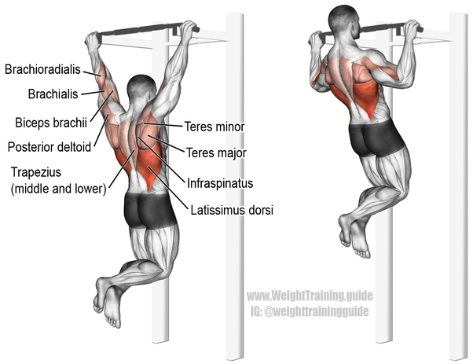

Expert exercises
Pull Up

A pull-up is an upper-body strength exercise. The pull-up is a closed-chain movement where the body is suspended by the hands and pulls up. As this happens, the elbows flex and the shoulders adduct and extend to bring the elbows to the torso. Just like any bodyweight back exercise this movement uses your body weight as resistance rather than external weights. While the exercise itself is relatively simple, mastering it can be tricky for those who are new to strength training.
Pull-ups are so hard because they require you to lift your entire body up with just your arms and shoulder muscles. If you don’t already have significant strength here, doing this can be quite a challenge.
How do you do the pull up?
Start by standing directly below a pull-up bar. Place your hands in an overhand grip (palms facing away from your body) with your hands slightly further than shoulder-with apart. If you can’t reach the bar from standing on the floor, you can place a box beneath you and stand on that instead. Once your hands are holding onto the bar, you’re in your starting position. Inhale, then exhale. Lift your feet up from the floor or box so that you’re hanging from the bar, and engage your core by pulling your belly button in toward your spine. Pull your shoulders back and down. Engaging the muscles in your arms and back, bend your elbows and raise your upper body up toward the bar until your chin is over the bar. You can imagine bringing your elbows toward your hips if that makes the movement easier. As you move, avoid swinging your legs around or shrugging your shoulders up. You want to make sure your shoulder blades remain back and down throughout the exercise. At the top of the movement, inhale. Then extend your elbows and lower your body back down to the starting position.
Video example and tutorial of pull up
https://www.youtube.com/watch?v=eGo4IYlbE5g
Area of effects
Benefits of doing pull up
Pull-ups have many benefits for your physical health, from building muscle to improving your quality of life. It build holistic upper body strength, improve your overall physical health, and tone your upper body.